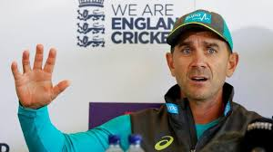
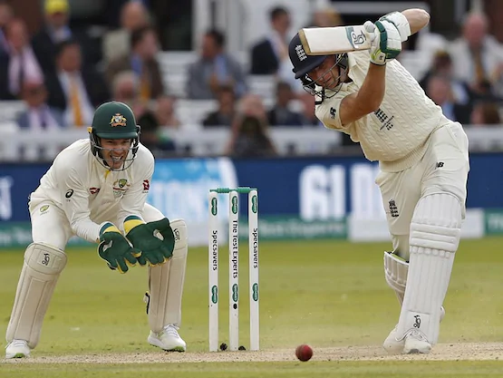

SPORTS
Justin Langer insisted Australia had not taken an undue risk in allowing Steve Smith to resume his innings..

"These Are Like My Sons": Justin Langer Defends Decision To Let Steve Smith Resume Innings
Justin Langer insisted Australia had not taken an undue risk in allowing Steve Smith to resume his innings..
"These Are Like My Sons": Justin Langer Defends Decision To Let Steve Smith Resume Innings

ENG vs AUS 2nd Test Day 5 Live Score, Ashes 2019: England managed to take a 104-run lead at stumps on Day 4 of the rain-affected second Ashes Test.
England vs Australia 2nd Test Day 5 Live Score, Ashes 2019: Rain Delays Start Of Play At Lord's